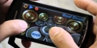
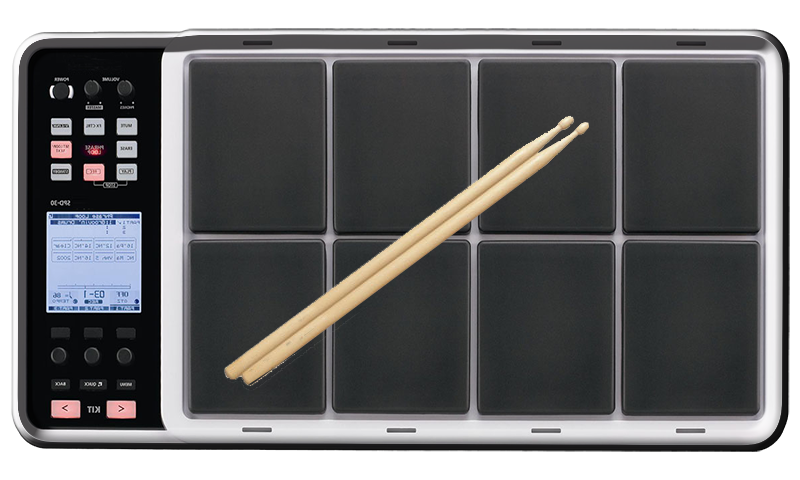
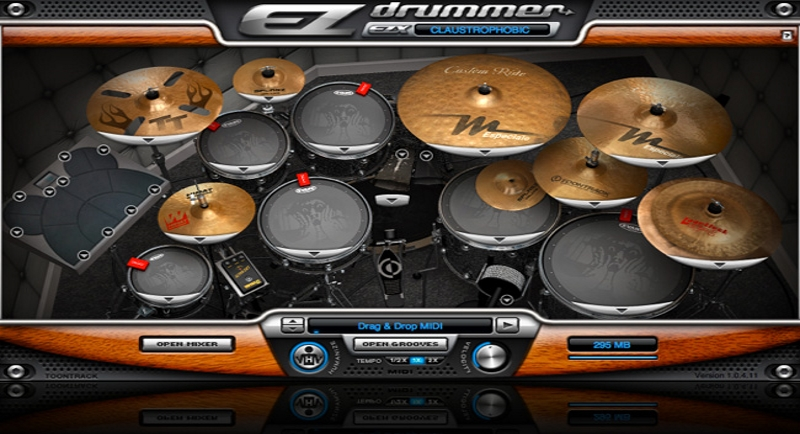

סוגי מערכות תופים :
מערכת תופים וירטואלית
מערכת תופים וירטואלית הגיעה לעולם יחד עם הקדמה, ועם התפתחות הטכנולוגיה. תופים וירטואליים הם למעשה תופים שהצליל שלהם מגיע מהמחשב האישי, או מהיכן שבו הם מושמעים. זה למעשה תוכנה אשר מדמה את הסאונד ואת הצלילים של התופים. אתם בטח שואלים איזה תופים? התשובה היא כולם! תופים וירטואליים יכולים להפיק כל צליל שרק נבחר. הוא אינו דורש אקוסטיקה מיוחדת, ואינו דורש למעשה שום דבר, למעט טכנולוגיה מסוימת כמו מחשב או טלפון חכם. תופים וירטואליים נועדו בעיקר בשביל הקלטות בצורה קלה. מוסיקה אלקטרונית היא זו שבעיקר מאמצת את המערכת הזו, שכן מוסיקה אלקטרונית כל כולה נעשה באמצעות המחשב, אולי למעט הסולן, וגם זה לא תמיד.
קהילה שעושה שימוש בתופים וירטואליים הם התקליטנים, שכן הם בעיקר אלה שמתעסקים עם מוסיקה אלקטרונית, ולכן הם גם כמובן עושים בזה שימוש. ישנם תקליטנים שלוקחים את זה צעד אחד קדימה ועובדים עם לוח אלקטרוני שעליו נמצאים לוחות פד עשויים מגומי קשיח שעליו ניתן להכות באמצעות מקלות תיפוף והוא מוציא את הסאונד מהרמקולים שאליהם המשטח הזה מחובר. ניתן כמובן לשנות את הצלילים לפי רצון המשתמש.  פד תופים של תקליטנים
לסיכום, תופים וירטואליים – כשמם כן הם. מנגנים עליהם בצורות שונות על טכנולוגיה מסוימת, בין אם זה בטלפון חכם, במחשב, או על משטח מיוחד. יש אנשים הנוטים לחשוב שתופים וירטואליים הם למעשה תופים אלקטרוניים , אך למעשה אמרה זו אינה נכונה. תופים אלקטרוניים באים לדמות את התופים האקוסטיים ובין היתר לפתור את בעיית האקוסטיקה. תופים וירטואליים באו לתת מענה מהיר לצורך בתופים. הכלל הבא מסכם את הדברים: תופים וירטואליים אמנם יכולים לספק לך את המוצר שאתה רוצה, אך הם לא מלמדים אותך לתופף. תופים אלקטרוניים כן מלמדים אותך לתופף.  תוכנה לעריכה והוספה של תופים